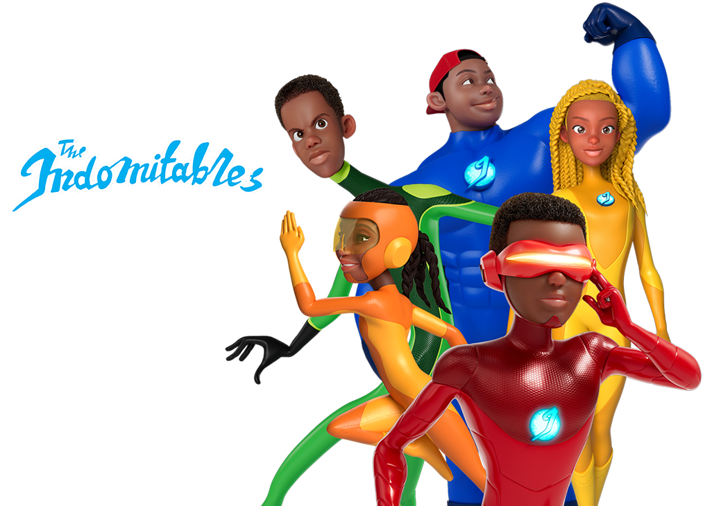

BRAND LEGACY
Indomie is the Market Leader in the noodles industry in Nigeria. We
have been feeding households since 1988 and impacting the lives of
Nigerians from various walks of lives. Without a doubt, Indomie is fast
replacing the term “noodles” in Nigeria.
The brand has grown to be considered synonymous with quality, taste,
and value. The range of products Indomie offers command a substantial
degree of brand loyalty and enviable “top of mind’ status amongst its
consumers.
Vision: To continue to be the most trusted food brand, leading the
instant noodles category.

THE INDOMITABLES
As a household name in Nigeria, we also wanted to stamp our authority as every
kid’s favorite brand so we decided to identify with something they all love-
SUPERHEROES!!
This led to the birth of the INDOMITABLES, five Indomie superheroes ( BIGBOY,
SWIFTY, STRETCHY,VISION & TWEENY) with amazing superpowers that match
all the different nutrients kids get from Indomie noodles. The first and most
popular Indomitable is BIGBOY– he is the epitome of strength, courage and
invincibility. The next indomitable is the female superhero SWIFTY, and she has
the power of speed and agility. STRETCHY is flexible and embodies the natural
ability to take on any shape or form. VISION has Ultra super sights and releases
laser through his eyes while TWEENY has the power of invisibility. She can
pass through any body of “matter” effortlessly. These five indomitables were created
to inspire kids to achieve greatness and be superheroes in their everyday life.
